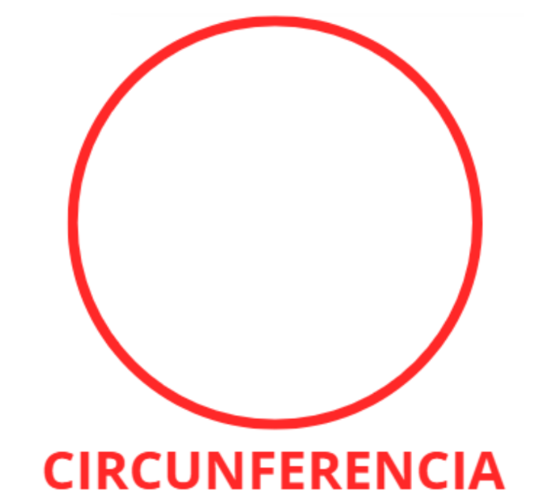
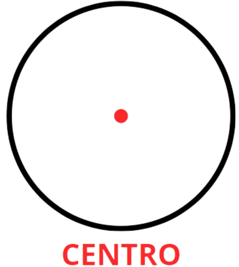
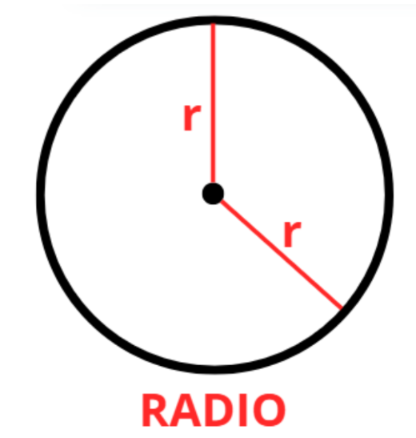
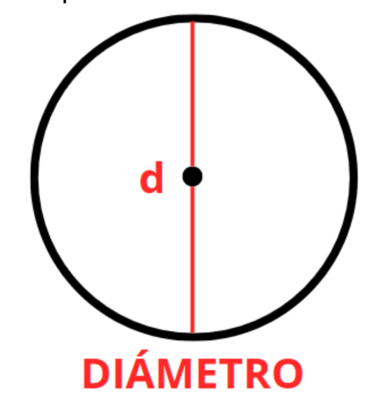
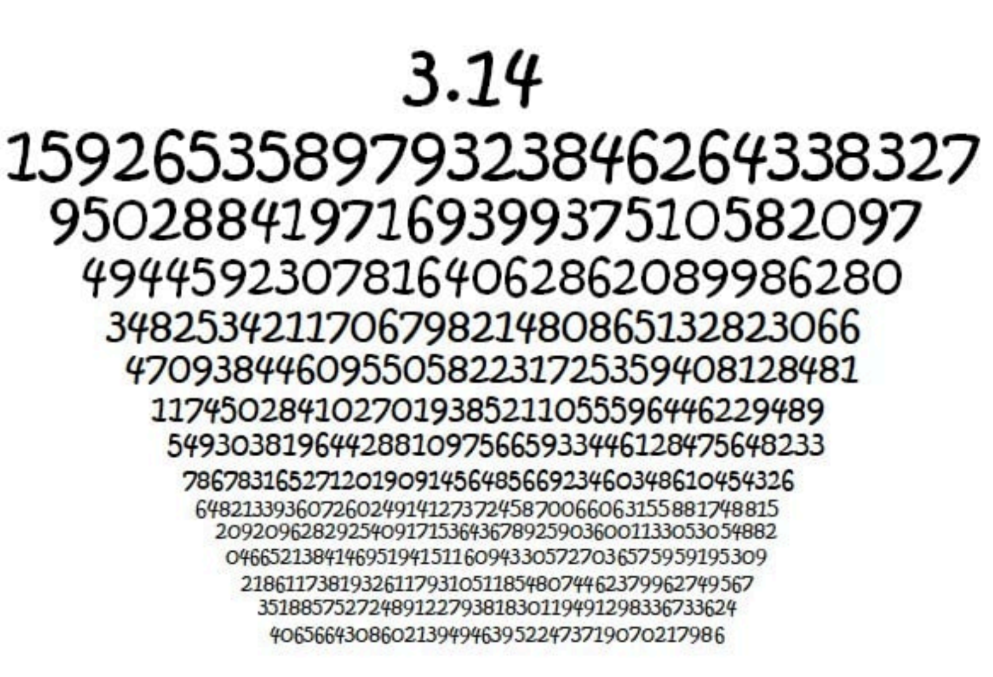
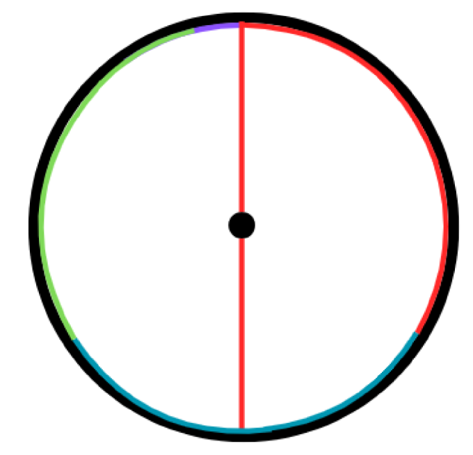
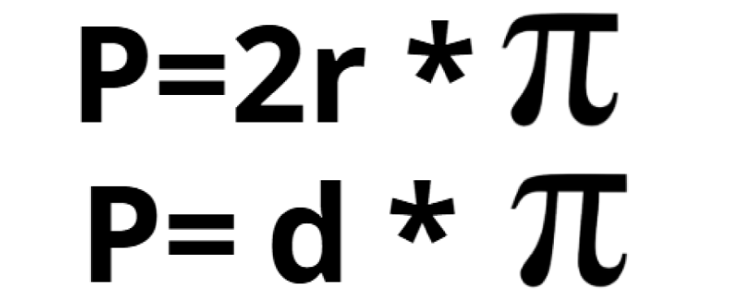
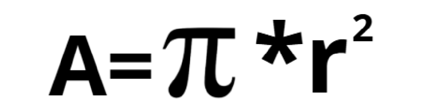

Hasta ahora hemos visto todo tipo de figuras pero seguramente te has preguntado ¿qué pasa con las curvas? Y es que son un caso muy especial ya que es muy complicado medirlas de hecho no se pueden medir exactamente, pues dependen de un valor muy especial que presentaremos más adelante. Pero, por ahora, conozcamos a esa figura tan rara formada por solo curvas.
Circunferencia
La circunferencia es la parte externa del círculo, técnicamente su perímetro y lo que viene siendo el círculo en sí, pues es lo que lo delimita y por ende hace al círculo una figura geométrica.
Centro
El centro del círculo se ubica, como su mismo nombre lo indica, en el centro de esta figura. Esta parte del círculo es muy importante puesto que de aquí parten otros conceptos.
Radio
El radio del círculo parte desde el centro hasta la circunferencia y se pueden dibujar varios, pues siempre valdrán lo mismo.
Diámetro
El diámetro es igual a la suma de dos radios y es la medida de un extremo de la circunferencia al otro, pasando siempre por el centro del círculo. Es como partir por la mitad el círculo, en donde el diámetro sería la línea que parte al círculo.
Ese símbolo tan raro es conocido como pi y es fundamental para calcular el área y el perímetro del círculo. Este símbolo tiene un valor igual a 3,14 aproximadamente. Este es un número decimal infinito. La siguiente imagen te puede dar una pequeña idea de la magnitud de este número decimal:
Al ser un número que no tiene fin, optamos por elegir el valor 3,14. Ahora, existe una explicación para esto, y es que pi es la relación entre el diámetro y la circunferencia del círculo. Esta representación gráfica nos puede ayudar a comprender mejor.
Las líneas de color rojo, azul y verde son de la misma medida del diámetro que podemos ver en medio. Si agarramos el diámetro y lo curvamos, necesitaremos tres diámetros para casi llenar la circunferencia. Esa última parte de morado es lo que falta para completar la circunferencia y, por ende, es el 0,14 que forma parte del 3,14 de pi. Con esto, podemos decir que pi (π) en realidad es cuántos diámetros forman la circunferencia del círculo.
PERÍMETRO Y ÁREA DEL CÍRCULO
Ahora que conocemos pi, podemos conocer las fórmulas para hallar el perímetro y área de un círculo.
Perímetro
En esta fórmula "P" es perímetro; "r" es el radio del círculo y "d" el diámetro.
Área
En esta fórmula "A" es el área y "r" es el radio del círculo.
1. ¿Cuál es la parte externa del círculo, que lo delimita como figura geométrica?
2. El radio de un círculo es:
3. ¿Qué representa el diámetro en un círculo?
4. ¿Cuál es la relación entre diámetro y circunferencia en un círculo?
5. Si el radio de un círculo mide 7u, ¿cuánto mide el diámetro?
6. ¿Cuál es el valor aproximado de π que se usa en los cálculos escolares?
7. ¿Qué fórmula se usa para calcular el perímetro de un círculo?
8. Si el radio de un círculo mide 10u, su perímetro es:
9. El área de un círculo con radio 6u es:
10. El perímetro de un círculo con diámetro 8u es:
11. ¿Qué sucede con el valor de π?
12. Si el radio de un círculo es 4u, ¿cuál es su área?